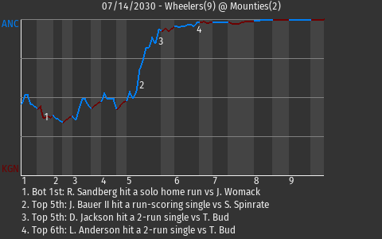

| MINOR LEAGUE PBE ANCHORAGE WHEELERS AT KINGSTON MOUNTIES 07/14/2030 |  | |
| |
|
 | | MINOR LEAGUE PBE | | ANCHORAGE WHEELERS AT KINGSTON MOUNTIES | | GAME ID: 512 - SUNDAY, JULY 14TH, 2030 - GAME LOG | | | 1 | 2 | 3 | 4 | 5 | 6 | 7 | 8 | 9 | R | H | E |
|---|
| Anchorage Wheelers (21-23) | 0 | 0 | 1 | 0 | 5 | 2 | 0 | 1 | 0 | 9 | 14 | 1 | | Kingston Mounties (24-20) | 1 | 0 | 0 | 0 | 0 | 1 | 0 | 0 | 0 | 2 | 3 | 1 |
|
|  |
|
| Bauer II Powers Wheelers to 9-2 Win | Jack Bauer II made an impact in the 9-2 Anchorage win over Kingston. Bauer II, who is tied for 9th in the MiLPBE in stolen bases with 2, went 4-4 with 4 singles and a walk. He scored 2 runs and drove in 3. Justin Womack got credit for the win, improving to 5-3. He allowed 1 run on 2 hits in 5.1 innings. Anchorage now sits in second place in the West Division at 21-23.
Anchorage grabbed the momentum in the top of the fifth, when Bauer II, who is tied for 9th in the MiLPBE in stolen bases with 2, hit a run-scoring single. His 32nd hit of the season put the Wheelers out in front, 2-1.
"It was a solid team effort and we'll try to keep this momentum going," Bauer II told reporters after the game.
|
| |  |
|
|
| ANCHORAGE BATTING LINESCORE | | KINGSTON BATTING LINESCORE |
|---|
|
BATTING
Doubles: T. Grimes (7, 8th Inning off T. Bud, 0 on, 0 outs)
Triples: T. Grimes (3, 3rd Inning off S. Spinrate, 0 on, 1 out)
Total Bases: S. Michaels , L. Anderson , D. Jackson , B. Simmons 2 , T. Grimes 6 , M. Smart , J. Bauer II 4 , R. Drumbo
2-out RBI: L. Anderson , D. Jackson
Runners left in scoring position, 2 outs: T. Turtle , B. Simmons , M. Smart , R. Drumbo
GIDP: D. Jackson
Team LOB: 9
BASERUNNING
SB: M. Smart (6) , J. Bauer II (2)
CS: B. Simmons (6)
FIELDING
Errors: A. Brusilov (1)
Double Plays: 1 (Bauer II-Anderson-Smart) |
| | |
|
|
| ANCHORAGE PITCHING LINESCORE | | KINGSTON PITCHING LINESCORE |
|---|
|
|
|
| GAME NOTES |
Player of the Game: Jack Bauer II
Ballpark: The Barracks
Weather: Clear skies (81 degrees), wind blowing out to left at 18 mph
Start Time: 2:05 PM EST
Time: 3:50
Attendance: 16118
Special Notes: Taylor Grimes ties the ANC regular season game record for runs with 4. |
 |